Menu: Assuntos Regulatórios (o item do menu diz "Programação Regulatória"; o título no alto da tela diz "Programação") · Situação do manual: Em ajuste · Fonte dos prints: versão nova (rodada de 18/11/2026).
Para que serve
Agenda cada ocorrência de um processo regulatório: um produto ou um documento, com categoria, data programada, prazo máximo, validade e, se houver, o número do registro ou da notificação e o fornecedor. É o segundo passo da sequência Processo Regulatório → Programação → Monitoramento. A situação da programação (Programada, Em Monitoramento, Cancelada, Finalizada) só muda pela tela Monitoramento: a Programação não tem botão de finalizar nem de cancelar (rodada 10, R10-PG-11).
Antes de começar (o que precisa existir)
| O que precisa existir | Para quê | Onde se cadastra |
|---|---|---|
| Processo regulatório ativo | Campo "Processo Regulatório" | Assuntos Regulatórios > Processo Regulatório |
| Prestador / Fornecedor (opcional) | Lista "Prestador / Fornecedor" (no print aparece um laboratório) | Cadastros de pessoa jurídica (a confirmar) |
| Dados da ocorrência: tipo, categoria, data programada, prazo máximo, validade; nome do produto ou nome e número do documento | Campos obrigatórios | Informação da área |
| A função da tela no perfil | Sem ela os botões ficam desabilitados | Administração > Perfil |
Passo a passo
- Abrir a lista. No menu Assuntos Regulatórios, clique em Programação Regulatória. Aparece o quadro "Pesquisa" com Tipo (TODOS), Processo Regulatório (texto), Categoria (TODAS) e Situação (TODAS), os botões PESQUISAR e LIMPAR e o botão verde Incluir. A lista fica vazia até clicar em PESQUISAR.
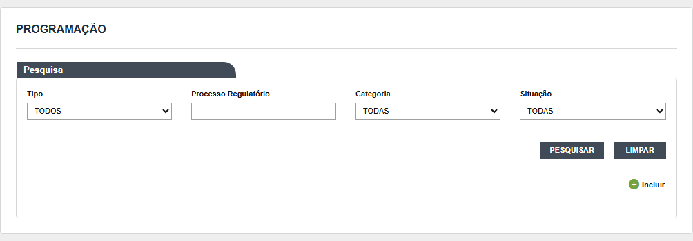
A imagem mostra o quadro Pesquisa e a área da lista vazia. A Categoria tem oito opções: Medicamento; Cosméticos, Perfumes e Produtos de Higiene; Produtos Para Saúde; Saneantes; Alimentos; LAQFA; Fornecedores / Prestadores; Outros. A Situação tem TODAS, Programada, Em Monitoramento, Cancelada e Finalizada.
Ao clicar em PESQUISAR, a lista mostra 10 linhas por página, com a paginação Anterior, 1, 2, 3, Próxima embaixo, a lupa (ou o lápis) e o LOG em cada linha.
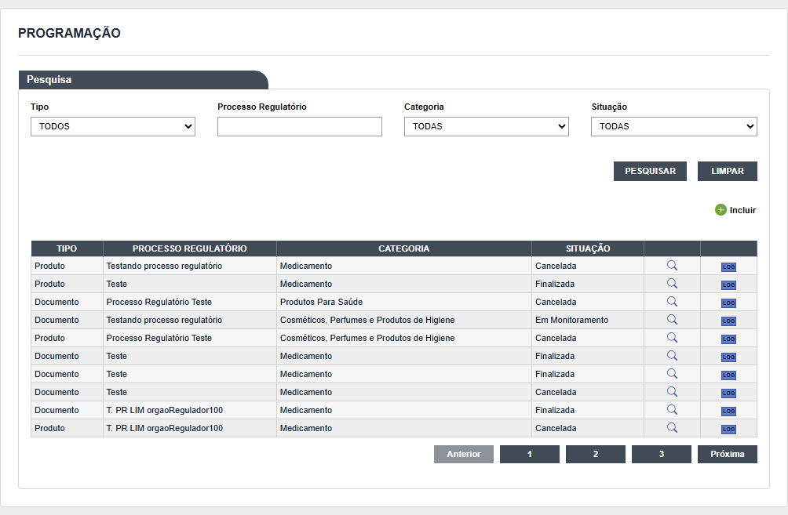
A imagem mostra dez programações e a paginação. A pesquisa por texto que nenhum processo contém mostra "A pesquisa não retornou nenhum resultado.".
- Incluir. Clique em Incluir. Abre a tela "Programação", quadro "Edição", com Tipo*, Processo Regulatório*, Categoria*, Grau/Classe, Data Programada*, Prazo Máximo*, Registro / Notificação, Validade*, Prestador / Fornecedor, Nome do Produto (travado), Nome do Documento*, Nº do Documento*, Responsável e Data (os dois últimos travados), e os botões VOLTAR, LIMPAR e SALVAR.
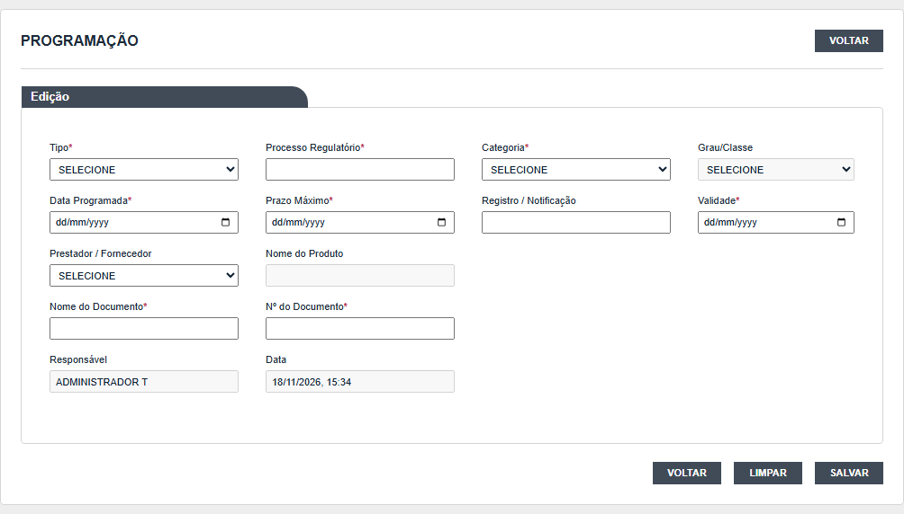
A imagem mostra o formulário vazio; Responsável aparece como ADMINISTRADOR T.
- Salvar vazio (para conhecer o aviso). Clique em SALVAR sem preencher. Aparece a faixa "Preencha os campos obrigatórios antes de salvar." e, só sob o Processo Regulatório, a frase "Selecione um processo regulatório ativo válido.". Os demais campos obrigatórios não recebem aviso próprio (DV-GQ-N-037).
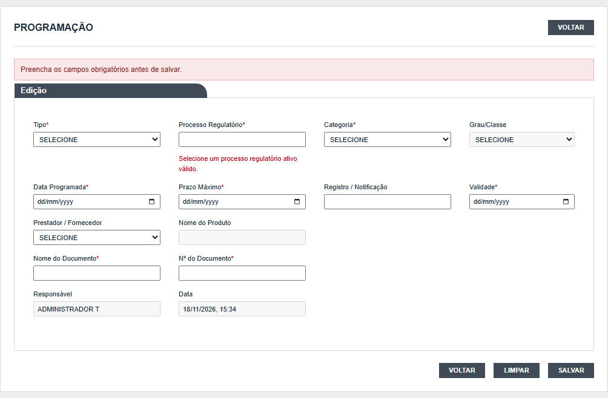
A imagem mostra a faixa vermelha no alto e o aviso sob o Processo Regulatório; o resto do formulário não indica qual campo falta.
-
Escolher o tipo. Com Tipo = Documento, o Nome do Produto fica travado e o Nome e o Nº do Documento são exigidos. Com Tipo = Produto, o nome e o número do documento ficam travados e o Nome do Produto é liberado (R10-PG-03). O Grau/Classe (opções 1, 2, 3 e 4) fica liberado nas categorias "Cosméticos, Perfumes e Produtos de Higiene" e "Produtos Para Saúde" (com Produto ou com Documento) e travado nas outras seis, como no legado (conferido em 18/11/2026; o manual anterior dizia que ficava travado em todas).
-
Preencher. Informe o processo regulatório (digite o nome exato de um processo ativo), a Categoria, as três datas, o fornecedor (se quiser), o nome e o número do documento.
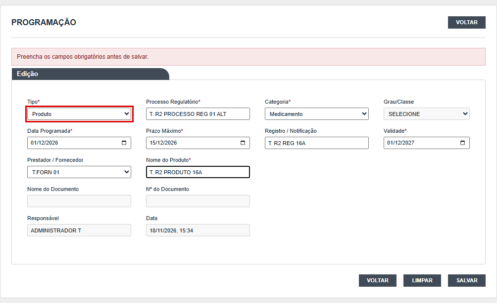
A imagem mostra Tipo "Produto" (campo marcado), categoria "Medicamento", data programada 01/12/2026, prazo máximo 15/12/2026, validade 01/12/2027, fornecedor e Nome do Produto preenchidos, com o Nome e o Nº do Documento travados. O Registro / Notificação aceita até 255 caracteres (no legado eram 250).
- Salvar e confirmar. Clique em SALVAR. O sistema pergunta "Confirma a inclusão do item?". Clique em SIM.
A imagem mostra a pergunta com SIM e NÃO.
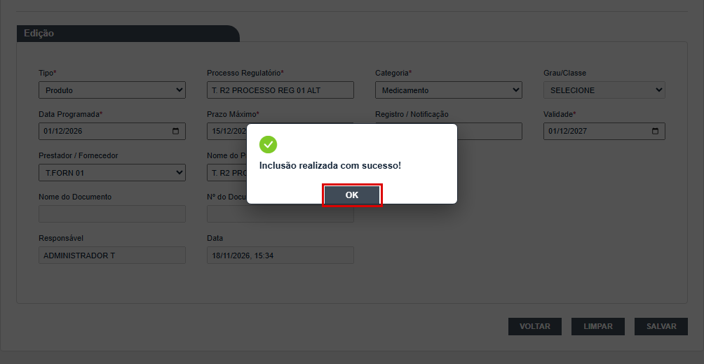
A imagem mostra "Inclusão realizada com sucesso!" com o botão OK.
- Consultar uma programação que não é "Programada". Na lista, programação Programada tem o lápis (Editar); as demais têm a lupa (Visualizar), e todas têm o LOG. A lista filtrada por Situação "Cancelada" mostra só a lupa e o LOG.
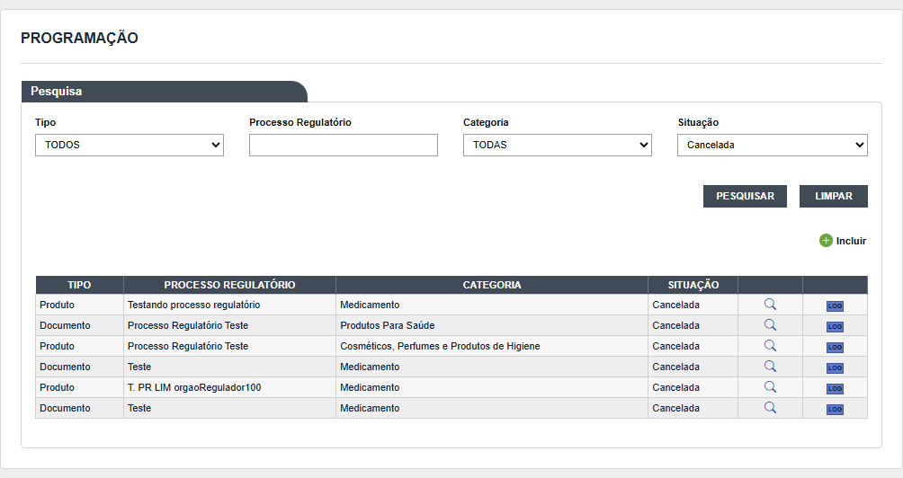
A imagem mostra seis programações Canceladas, sem lápis. A lupa abre a tela com todos os campos travados, só com VOLTAR.
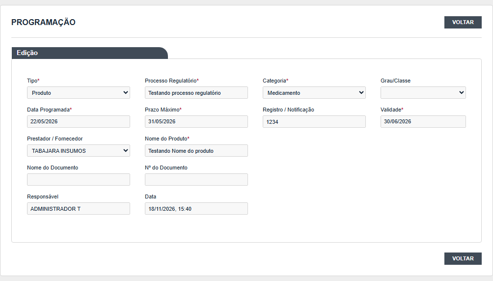
A imagem mostra uma programação do tipo Produto, categoria Medicamento, sem os botões SALVAR e LIMPAR. O campo de produto aceita qualquer texto.
- Alterar. Abra pelo lápis, mude o dado e clique em SALVAR.
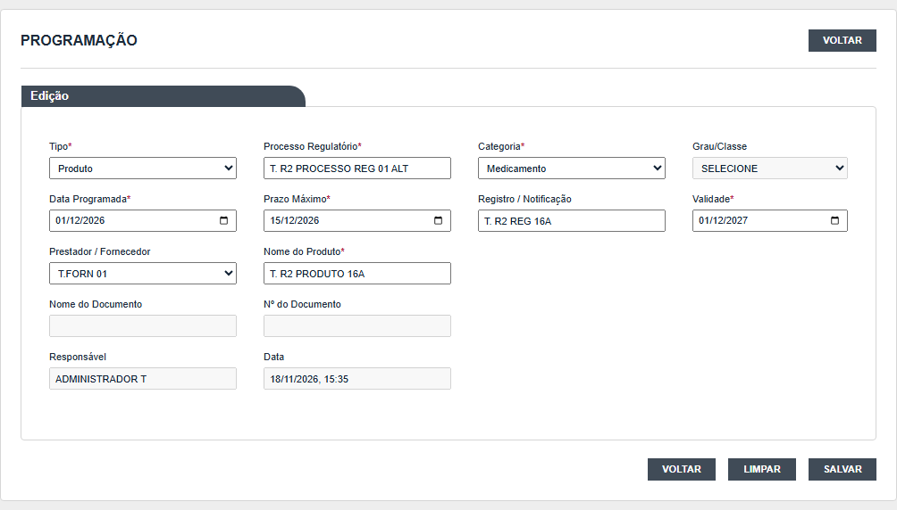
A imagem mostra o formulário com os dados da programação. Ao salvar, a tela faz duas perguntas: primeiro "Confirma a alteração do item?" (clique em SIM) e depois a caixa Justificativa* (até 255 caracteres).
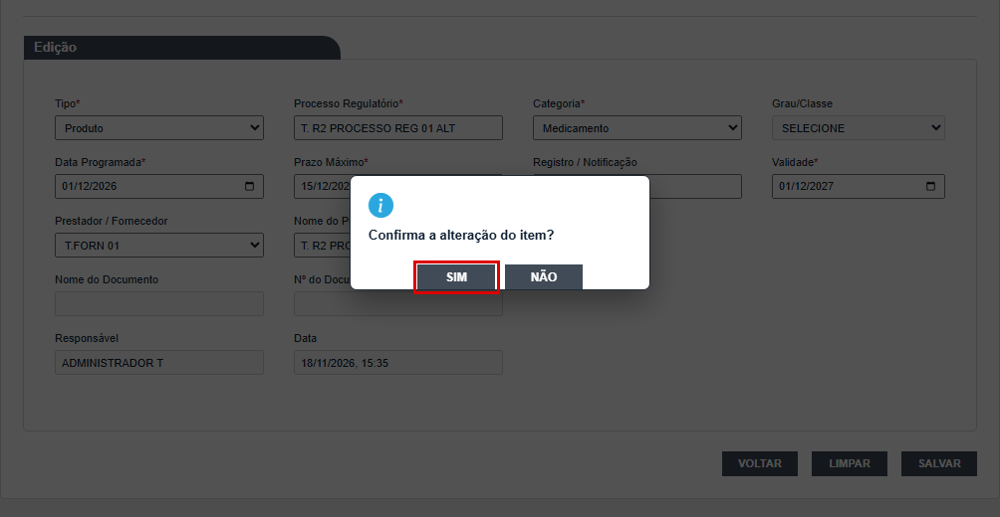
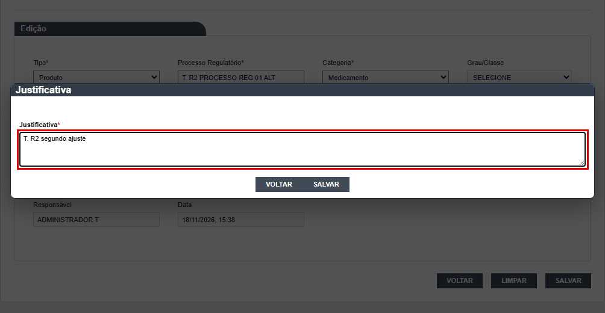
Se a justificativa ficar vazia, o sistema avisa "A justificativa é obrigatória e deve ter no máximo 255 caracteres.".
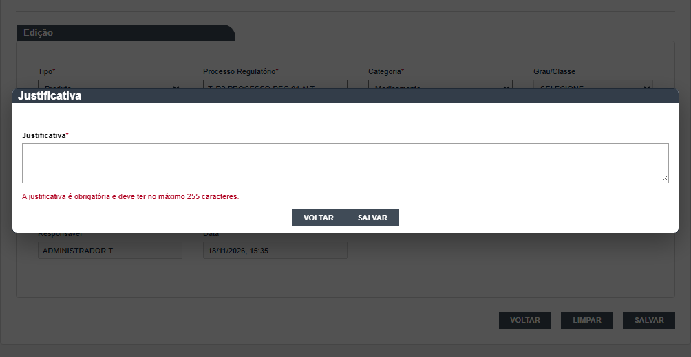
Com a justificativa preenchida e SALVAR, aparece "Alteração realizada com sucesso!".
- Ver o histórico. Na lista, clique em LOG. Abre "Log Alteração - Programação" com Alteração, Valor Antigo, Valor Novo, Data, Hora e Usuário.
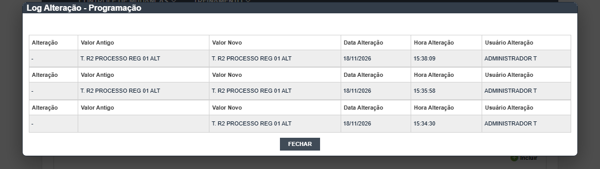
A imagem mostra três linhas (a inclusão e as duas alterações), todas com Alteração "-" e o nome do processo como valor antigo e novo (na inclusão o valor antigo vem vazio). O sistema não diz qual campo mudou e a justificativa não aparece (DV-GQ-N-035; DV-GQ-N-018).
-
Conferir o que a tela deixa passar. Datas fora de ordem e duplicidade não são recusadas: uma programação com data programada 01/03/2025, prazo máximo 10/01/2025 (antes da data programada) e validade 01/02/2025 (já vencida) foi gravada com "Inclusão realizada com sucesso!".
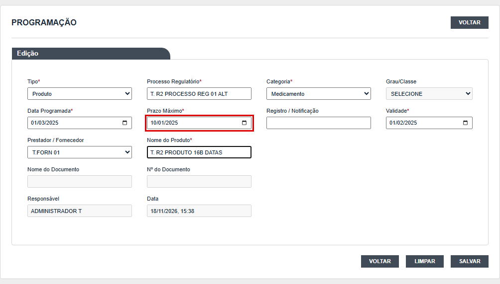
Programação: datas fora de ordem · clique para ampliar Programação: datas fora de ordem aceitas · clique para ampliar O mesmo Nome e Nº de documento gravado duas vezes também dá sucesso nas duas (DV-GQ-N-045).
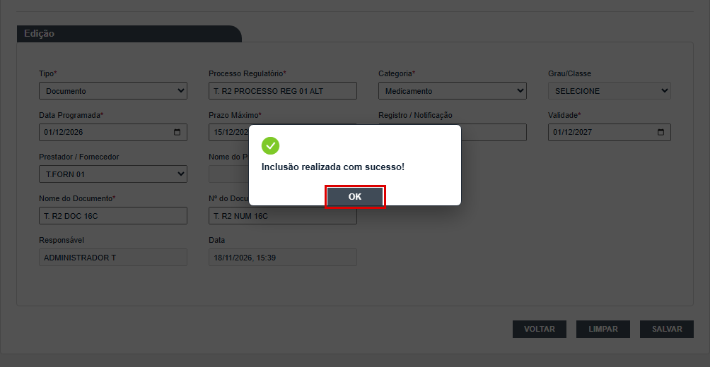
Programação: duplicidade aceita · clique para ampliar -
Texto grande. Com Nome do Documento de 255 caracteres (a tela deixa digitar), a faixa vermelha diz "Ocorreu um erro interno no servidor." e nada é gravado (DV-GQ-N-022; DV-GQ-N-045).
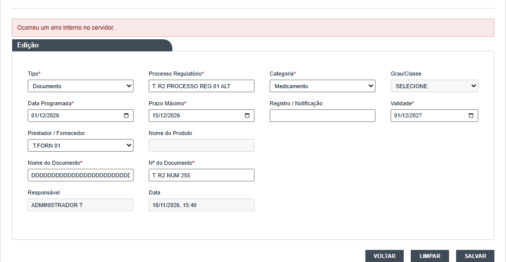
Programação: erro com 255 caracteres · clique para ampliar -
Processo que não existe. Digite no Processo Regulatório um nome que não existe e preencha o resto. O aviso "Selecione um processo regulatório ativo válido." aparece sob o campo, mas a faixa de cima também diz "Preencha os campos obrigatórios antes de salvar.", embora tudo esteja preenchido (DV-GQ-N-081).
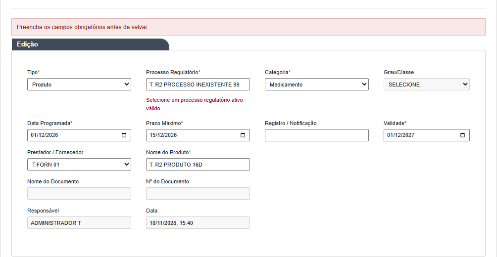
Programação: processo inexistente · clique para ampliar -
Cancelar e finalizar não existem aqui. A situação da programação muda no Monitoramento.
Ícones e botões da lista
| Ícone ou botão | O que faz | Quando aparece |
|---|---|---|
| Lápis (Editar) | Abre para alterar | Programação Programada (título do botão: "Editar") |
| Lupa (Visualizar) | Abre só para leitura | Em Monitoramento, Cancelada, Finalizada (título do botão: "Visualizar") |
| LOG | Histórico | Todas as linhas |
| Paginação (Anterior, 1, 2, 3, Próxima) | Troca a página da lista (10 linhas por página) | Depois de pesquisar |
| Incluir (verde) | Abre o formulário | Sempre (administrador) |
| PESQUISAR / LIMPAR | Lista / esvazia o filtro | Sempre |
| Excel, Imprimir, Excluir | Não existem | Nunca |
Botões e ações
| Botão | O que faz |
|---|---|
| Incluir | Abre o formulário novo |
| SALVAR | Pede confirmação e grava (inclusão) ou pede confirmação e justificativa (alteração) |
| LIMPAR | Esvazia o formulário |
| VOLTAR | Volta à lista sem gravar (no alto e no pé) |
| LOG | Abre o histórico |
Mensagens do sistema
| Mensagem | Quando aparece |
|---|---|
| Confirma a inclusão do item? | Ao salvar uma programação nova |
| Confirma a alteração do item? | Ao salvar uma programação alterada (antes da justificativa) |
| Justificativa* (caixa) / A justificativa é obrigatória e deve ter no máximo 255 caracteres. | Depois do SIM da alteração / justificativa vazia |
| Alteração realizada com sucesso! | Alteração gravada |
| Inclusão realizada com sucesso! | Depois do SIM |
| Preencha os campos obrigatórios antes de salvar. | Campos obrigatórios vazios |
| Selecione um processo regulatório ativo válido. | Processo vazio ou inexistente (inativo não testado) |
| Ocorreu um erro interno no servidor. | Texto acima do limite do banco |
| A pesquisa não retornou nenhum resultado. | Lista sem linhas |